▶ ویدیوی معرفی
در این ویدیوی کوتاه، با پروژهٔ «بیتکوین و فلسفه» و نقشهٔ راه آن آشنا میشوید. نیک لند در این سمینار هشتجلسهای، بیتکوین را نه صرفاً یک فناوری، بلکه یک شیء فلسفیPhilosophical Object — ابژهای که مفاهیم بنیادین فلسفی را به چالش میکشد و نیازمند بازتعریف آنهاست. معرفی میکند.
📓 پادکست دفترچهٔ تعاملی
برای دسترسی به یادداشتها، فایلهای صوتی و تصویری و میزگرد تعاملی، خلاصههای تفصیلی و منابع تکمیلی، لطفاً به دفترچهٔ تعاملی (NotebookLM) مراجعه کنید.
بخش ۱: بنیادهای فنی
۱.۱ بیتکوین؛ سیستمی برای پول الکترونیکی همتا به همتا
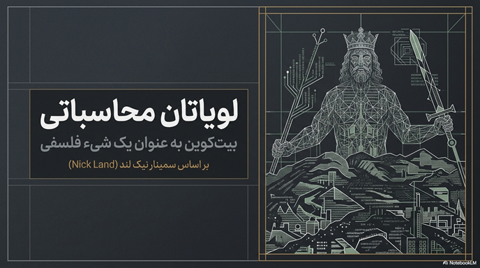
یک نسخهٔ کاملاً همتا به همتاPeer‑to‑Peer (P2P) — شبکهای غیرمتمرکز که در آن هر گره مستقیم با دیگر گرهها ارتباط دارد و نیازی به سرور مرکزی نیست. از پول الکترونیکی، امکان پرداختهای آنلاین مستقیم از یک طرف به طرف دیگر را بدون عبور از یک نهاد مالی فراهم میکند. امضاهای دیجیتالDigital Signatures — مکانیزم رمزنگاری که صحت و هویت فرستنده یک پیام دیجیتال را تأیید میکند. بخشی از راهحل را ارائه میدهند، اما اگر برای جلوگیری از دوبار خرج کردنDouble‑Spending — خطر خرج کردن یک دارایی دیجیتال بیش از یک بار که مشکل بنیادین پولهای دیجیتال است. همچنان به یک طرف سوم قابل اعتماد نیاز باشد، منافع اصلی سیستم از دست میرود.
ما راهحلی برای مسئلهٔ دوبار خرج کردن با استفاده از یک شبکهٔ همتا به همتا پیشنهاد میکنیم. این شبکه با تبدیل تراکنشها به یک زنجیرهٔ پیوسته از اثبات کارProof‑of‑Work (PoW) — مکانیزم اجماع که در آن گرهها با حل مسائل محاسباتی دشوار، حق ایجاد بلوک جدید را به دست میآورند. مبتنی بر هش، آنها را زمانبندی میکند و سابقهای ایجاد میکند که بدون انجام دوبارهٔ اثبات کار قابل تغییر نیست. طولانیترین زنجیره نه تنها به عنوان شاهدی بر توالی رویدادها عمل میکند، بلکه ثابت میکند که از بزرگترین منبع قدرت پردازشی سرچشمه گرفته است. تا زمانی که اکثریت قدرت پردازشی تحت کنترل گرههاNodes — کامپیوترهایی که نرمافزار بیتکوین را اجرا میکنند و در حفظ و تأیید شبکه مشارکت دارند. باشد که برای حمله به شبکه همکاری نمیکنند، آنها طولانیترین زنجیره را تولید کرده و از مهاجمان پیشی میگیرند.
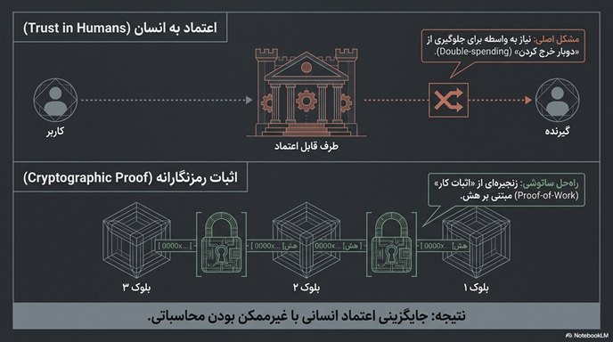
ما یک سکهٔ الکترونیکیElectronic Coin — در بیتکوین، یک سکه زنجیرهای از امضاهای دیجیتال است که مالکیت را اثبات میکند. را به عنوان زنجیرهای از امضاهای دیجیتال تعریف میکنیم. دریافتکنندهٔ پول میتواند امضاها را تأیید کند تا زنجیرهٔ مالکیت را بررسی نماید. مشکل این است که دریافتکننده نمیتواند تأیید کند که یکی از مالکان، سکه را دوبار خرج نکرده است. راهحل سنتی، معرفی یک مرجع مرکزیCentral Authority / Mint — نهادی متمرکز که تراکنشها را تأیید و از دوبار خرج شدن جلوگیری میکند؛ شبیه یک بانک یا ضرابخانه. قابل اعتماد است، اما این راهحل مشکل اعتماد را دوباره زنده میکند.
ما یک سرور زمانبندیTimestamp Server — سیستمی که با هش کردن یک بلوک از دادهها و انتشار آن، وجود دادهها در یک زمان مشخص را اثبات میکند. توزیعشده بر پایهٔ اثبات کار پیشنهاد میکنیم. اثبات کار شامل جستجو برای مقداری است که وقتی هشHash — خروجی یک تابع یکطرفه که ورودی دلخواه را به یک رشته با طول ثابت تبدیل میکند؛ برگشت آن غیرممکن است. میشود (مثلاً با SHA‑256SHA‑256 — الگوریتم هش رمزنگاری با خروجی ۲۵۶ بیتی که در بیتکوین استفاده میشود.)، هش با تعدادی بیت صفر شروع شود. اثبات کار اساساً یک‑پردازنده‑یک‑رأی است.
مراحل شبکه: ۱) تراکنشهای جدید به همهٔ گرهها پخش میشوند. ۲) هر گره تراکنشها را در یک بلوکBlock — بستهای از تراکنشهای تأییدشده که به زنجیره اضافه میشود. جمعآوری میکند. ۳) هر گره روی یافتن اثبات کار دشوار کار میکند. ۴) وقتی گرهای اثبات کار پیدا کرد، بلوک را پخش میکند. ۵) گرهها بلوک را فقط در صورت معتبر بودن میپذیرند. ۶) پذیرش بلوک با کار روی بلوک بعدی نشان داده میشود.
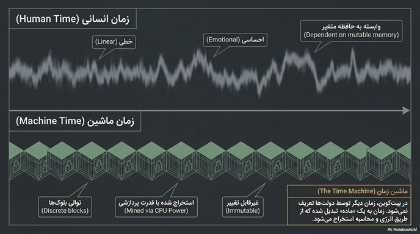
نخستین تراکنش در یک بلوک یک تراکنش ویژهCoinbase Transaction — نخستین تراکنش در هر بلوک که سکههای جدید ایجاد میکند و به استخراجکننده بلوک تعلق میگیرد. است که یک سکهٔ جدید به سازندهٔ بلوک میدهد. انگیزه را میتوان با کارمزد تراکنشTransaction Fee — مبلغی که فرستنده برای پردازش تراکنش خود به استخراجکننده میپردازد. نیز تأمین کرد. پس از ورود سکهها به گردش، انگیزه میتواند کاملاً به کارمزد تراکنش منتقل شود.
برای صرفهجویی در فضا، تراکنشها در یک درخت مرکلMerkle Tree — ساختار دادهای درختی که هش کردن کارآمد حجم زیادی از تراکنشها را در یک بلوک ممکن میکند. هش میشوند. تأیید پرداخت سادهشدهSimplified Payment Verification (SPV) — روشی که به کاربران اجازه میدهد بدون اجرای یک گره کامل، صحت تراکنش خود را تأیید کنند. نیز با نگه داشتن سرآیندهای بلوک ممکن است.
تراکنشها شامل ورودیهاInputs — ارجاع به تراکنشهای قبلی که نشان میدهد سکه از کجا میآید. و خروجیهاOutputs — آدرسها و مقادیری که سکه به آنها ارسال میشود. متعدد هستند. حریم خصوصی با ناشناسی کلیدهای عمومیPublic Key Anonymity — استفاده از کلیدهای عمومی جدید برای هر تراکنش تا ردیابی هویت کاربر دشوار شود. حفظ میشود. احتمال موفقیت مهاجم برای تغییر زنجیره با افزایش تعداد بلوکهای تأییدConfirmation Blocks — تعداد بلوکهایی که پس از بلوک حاوی تراکنش به زنجیره اضافه شدهاند؛ هر چه بیشتر باشد، امنیت تراکنش بالاتر است. به صورت نمایی کاهش مییابد.
ما سیستمی برای تراکنشهای الکترونیکی بدون اتکا به اعتماد پیشنهاد کردیم. این شبکه در سادگی بیساختار خود قوی است؛ گرهها میتوانند بدون نیاز به شناسایی، شبکه را ترک کرده و دوباره به آن بپیوندند.
۱.۲ خروج از پوسته: منشأ پول
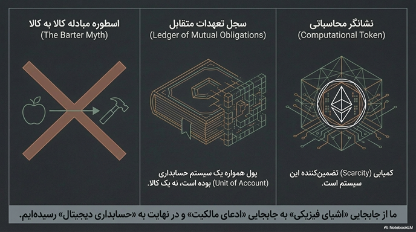
بسیاری فرض میکنند پول از طریق یک فرآیند سادهٔ جایگزینی به وجود آمده است — تبادل کالا به کالا (مبادله پایاپایBarter — سیستم تبادل مستقیم کالا یا خدمت بدون استفاده از پول.) جای خود را به صدف یا فلز داد. اما این روایت سادهانگارانه است. پول همواره به عنوان یک سیستم حسابداریAccounting System — سیستمی برای ثبت بدهیها و طلبها؛ پول در اصل یک روش ثبتداداری بوده، نه یک کالا. عمل کرده است. مردم یک سجلLedger — دفتر ثبت حسابها که نشان میدهد چه کسی به چه کسی چقدر بدهکار است. ذهنی یا فیزیکی داشتند.
ارزش پول از تعهدات متقابلMutual Obligations — وعدهها و بدهیهای دوطرفه بین اعضای یک جامعه که اساس ارزش پول را تشکیل میدهد. ناشی میشود. پول یک قرارداد اجتماعیSocial Contract — توافق جمعی برای پذیرش یک شیء خاص به عنوان معیار سنجش ارزش و بدهیها. است. تفاوت بین پول کالاCommodity Money — نوعی پول که خود شیء فیزیکی (مثل طلا) ارزش دارد و جابجا میشود. و پول اعتباریCredit Money — پولی که یک حق یا ادعای مالکیت (مثل اسکناس یا حساب بانکی) را منتقل میکند. در این است که در پول اعتباری یک حق یا ادعا را منتقل میکنیم، نه یک شیء فیزیکی. بیتکوین هر دو مدل را در یک سیستم دیجیتال غیرمتمرکز ترکیب میکند.
۱.۳ قراردادهای هوشمند؛ بلوکهای سازندهٔ بازارهای دیجیتال
یک قرارداد هوشمندSmart Contract — برنامهای خوداجرا که شرایط یک قرارداد را به صورت کد دیجیتال تعریف میکند و بدون واسطه اجرا میشود. مجموعهای از وعدهها است که به زبان دیجیتال نوشته شده و بهطور خودکار اجرا میشود. سادهترین مثال یک ماشین فروش خودکار (ماشین فروش خودکارVending Machine — نماد اولیه و سادهٔ قرارداد هوشمند: با دریافت پول، کالا را بدون نیاز به انسان تحویل میدهد.) است. قراردادهای هوشمند میتوانند هزینههای تراکنشTransaction Costs — هزینههای مستقیم و غیرمستقیم انجام یک مبادله شامل هزینه جستجو، مذاکره و اجرا. را با حذف واسطهها کاهش دهند. این فناوری منجر به ظهور سازمانهای خودگردانAutonomous Organizations (DAOs) — سازمانهایی که قوانین حاکم بر آنها توسط کد اجرا میشود، نه مدیران انسانی. میشود و حاکمیتGovernance — فرآیند تصمیمگیری و مدیریت یک سازمان یا سیستم؛ در DAOها به کد محول میشود. را از حالت سیاسی به فرآیند محاسباتی تبدیل میکند.
بخش ۲: پایههای فلسفی
۲.۱ لویاتان
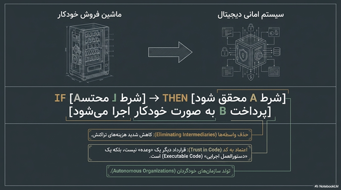
در وضعیت طبیعیState of Nature — وضعیت فرضی پیش از تشکیل دولت که در آن هیچ قدرت مرکزی برای برقراری نظم وجود ندارد.، زندگی انسان «تنها، فقیر، تنفرآمیز، درنده و کوتاه» است. سه علت اصلی نزاع: رقابت (رقابتCompetition — یکی از سه علت نزاع در وضعیت طبیعی؛ انسان برای منفعت به دیگران حمله میکند.)، بیاعتمادی (بیاعتمادیDiffidence — عدم اطمینان به دیگران که منجر به حمله پیشگیرانه برای امنیت میشود.) و افتخار (افتخارGlory — سومین علت نزاع؛ انسان برای شهرت و اعتبار به دیگران حمله میکند.). برای رهایی از این وضعیت، انسانها قدرت خود را به یک حاکم مطلقSovereign — شخص یا نهادی که قدرت نهایی را در یک جامعه دارد و نظم را برقرار میکند. واگذار میکنند. این لویاتان (لویاتانLeviathan — استعاره هابز از حاکم مطلق؛ هیولای دریایی عظیمالجثه از کتاب مقدس که نماد قدرت مطلق است.) یا «خدای فانی» است.
هابز نشان میدهد که مالکیت (مالکیتProperty — از نظر هابز، بدون حاکم معنا ندارد؛ در بیتکوین به حقیقت ریاضی تبدیل میشود.) و قرارداد (قراردادContract / Covenant — توافقی که بدون ضامن بیاعتبار است؛ در بیتکوین به کد اجرایی تبدیل میشود.) تنها در سایهٔ یک حاکم معنا مییابند. بیتکوین این را به چالش میکشد: ریاضیات خود ضامن مالکیت است.
۲.۲ نقد عقل محض
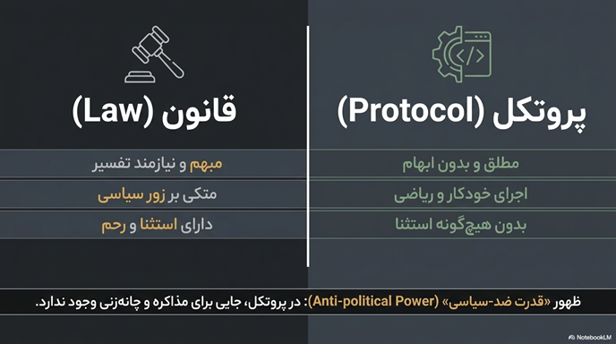
کانت دو فرم خالص شهودIntuition (Anschauung) — دریافت بیواسطهٔ ذهن از پدیدهها؛ کانت دو نوع شهود پیشینی دارد: مکان و زمان. حسی را معرفی میکند: مکان (مکانSpace (Raum) — قالب ذهنی پیشینی که امکان تجربهٔ اشیاء بیرون از ما را فراهم میکند.) و زمان (زمانTime (Zeit) — قالب ذهنی پیشینی برای تجربهٔ توالی و همزمانی رویدادها؛ در بیتکوین به تعداد بلوکها تبدیل میشود.). این دو پیشینی هستند و بهعنوان چارچوبهای اولیه برای تمام تجربههای حسی عمل میکنند. ما هرگز شیء در خود (نومنNoumenon / Thing‑in‑Itself — واقعیت مستقل از ذهن که هرگز مستقیماً قابل شناخت نیست؛ تنها پدیدار آن را میشناسیم.) را نمیشناسیم؛ فقط پدیدار (فنومنPhenomenon — شیء آنگونه که در تجربهٔ حسی و تحت قالبهای ذهنی مکان و زمان ظاهر میشود.) را میشناسیم.
سنتزSynthesis — فرآیند ترکیب دادههای حسی پراکنده توسط ذهن برای ایجاد یک تجربهٔ منسجم و واحد. فرآیندی است که ذهن ما تکههای پراکنده اطلاعات را به یک تجربهٔ منسجم تبدیل میکند. مقولاتCategories — مفاهیم محض فاهمه (۱۲ مفهوم بنیادین) که ذهن برای سازماندهی تجربه به کار میگیرد. قالبهای خالص فکر هستند که برای هر تجربهای ضروریاند. در بیتکوین نیز حقیقتِ تراکنشها از فیلتر هشها و پروتکل میگذرد.
۲.۳ در مورد اعداد محاسباتی
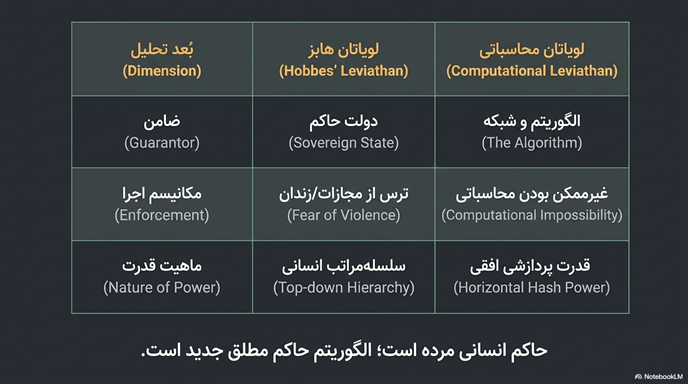
ایدهٔ ماشین محاسبهکنندهComputing Machine — مدل انتزاعی تورینگ از هر فرآیند محاسباتی که با نمادهای ساده روی نوار کار میکند. یا ماشین تورینگ (ماشین تورینگTuring Machine — مدل ریاضی پایهای که هر محاسبهٔ قابل تصور توسط الگوریتم را میتواند انجام دهد.) مدلی برای هر گونه محاسبهٔ الگوریتمی است. یک ماشین جهانیUniversal Machine (Universal Turing Machine) — ماشینی که میتواند رفتار هر ماشین تورینگ دیگری را شبیهسازی کند. میتواند رفتار هر ماشین دیگری را شبیهسازی کند.
اما مسئلهٔ توقفHalting Problem — مسئلهای که تورینگ اثبات کرد غیرقابل حل است: تشخیص توقف یا ادامهٔ یک برنامهٔ دلخواه. ثابت میکند که برخی مسائل محاسبهناپذیرUncomputable — مسئلهای که هیچ الگوریتمی نمیتواند آن را در زمان محدود حل کند. هستند. بیتکوین با تبدیل حقیقت به مسئلهٔ محاسباتی، مرزهای محاسبهپذیری را به قلمرو اقتصاد گسترش میدهد، اما مسئلهٔ توقف یادآوری میکند که همیشه افقی از ناشناختگی باقی میماند.
۲.۴ هستی و زمان
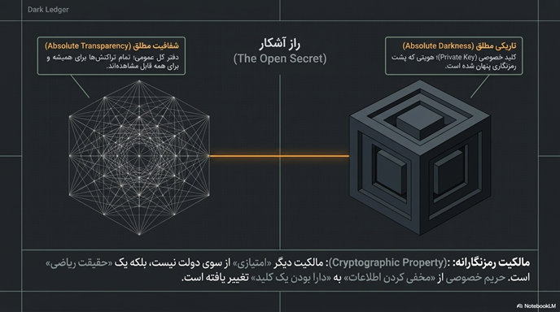
دازاینDasein — «هستی‑آنجا»؛ اصطلاح هایدگر برای موجود انسانی به مثابه موجودی که هستی برایش مسئله است. موجودی است که «در جهان بودن» را تجربه میکند. جوهر دازاین در هستی (هستیBeing (Sein) — بنیادیترین مفهوم فلسفه از نظر هایدگر؛ پرسش از معنای هستی محور کار اوست.اش نهفته است. دازاین در وضعیت روزمره تحت سلطهٔ «یکی»Das Man (The “They”) — هویت جمعی بینام و نشانی که در آن فردیت و مسئولیت گم میشود. قرار دارد. اضطرابAngst (Anxiety) — حالت بنیادینی که دازاین را با نیستی و امکان اصالت خود مواجه میکند. دازاین را به سوی اصالتAuthenticity (Eigentlichkeit) — شیوهای از هستی که در آن فرد مسئولیت زندگی خود را میپذیرد و از «یکی» جدا میشود. میبرد. هستی به سوی مرگ (هستی به سوی مرگBeing‑toward‑Death (Sein‑zum‑Tode) — پذیرش متناهی بودن به عنوان شرط اصیلترین شکل هستی.) اصیلترین شکل آگاهی است.
راهاندازEnframing (Gestell) — شیوهٔ فاش شدن جهان در فناوری مدرن که همه چیز را به «ذخیرهٔ آماده» تبدیل میکند. (Gestell) فناوری مدرن است که جهان را به ذخیرهٔ آمادهStanding‑Reserve (Bestand) — منابعی که برای بهرهبرداری و استخراج آماده شدهاند؛ انسان نیز به چنین منبعی تبدیل میشود. تبدیل میکند. بیتکوین در این چارچوب خود یک راهانداز است که زمان و حقیقت را به ذخیرههای آماده تبدیل میکند.
۲.۵ سرمایهداری و اسکیزوفرنی
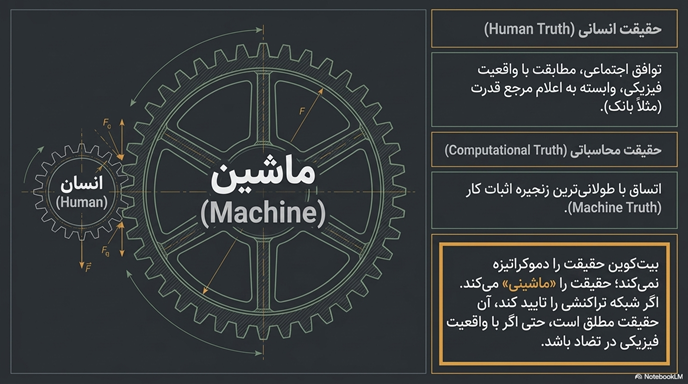
ماشینهای میلDesiring‑Machines — هر موجودیتی (بیولوژیک، اجتماعی، اقتصادی) که میل را تولید و هدایت میکند. همه جا کار میکنند. میل تولید واقعیت است. سرمایهداری دو عملیات متضاد انجام میدهد: ناحوطهزاییDeterritorialization — فرآیند آزادسازی جریانهای سرمایه، کار و اطلاعات از ساختارها و مرزهای سنتی. (آزاد کردن جریانها) و حوطهزایی مجددReterritorialization — مهار دوبارهٔ جریانهای آزادشده در ساختارها و مدارهای جدید برای حفظ سودآوری. (مهار آنها).
اسکیزوSchizo — شخصیت انقلابی در نظریهٔ دلوز و گتاری که از تمام ساختارها میگریزد و جریان خالص میل است. شخصیت واقعی سرمایهداری است که بر خط گریزLine of Flight (Ligne de Fuite) — مسیر فرار از ساختارهای سرکوبگر؛ حرکت به سوی آزادی و دگرگونی. سفر میکند. بیتکوین شکل نهایی ناحوطهزایی سرمایه است: پول به جریان خالصی تبدیل شده که هیچ مرکز ثقلی ندارد. انسانها فقط کاتالیزور این فرآیند هستند.
بخش ۳: سخنرانیهای نیک لند
۳.۱ تحلیل انتزاعی سیستم بیتکوین
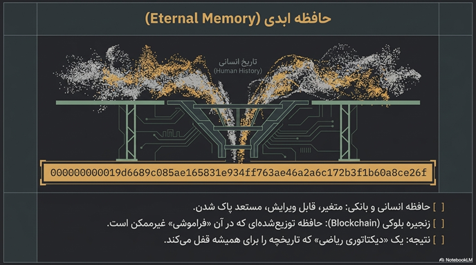
بیتکوین یک شیء فلسفیPhilosophical Object — مفهومی که درک فلسفی سنتی را به چالش میکشد و نیازمند بازتعریف مفاهیمی چون زمان، حقیقت و مالکیت است. است. فرآیند تحلیل دو طرفه است: بیتکوین را به زبان فلسفی ترجمه میکنیم و اجازه میدهیم بیتکوین مفاهیم فلسفی را تغییر دهد. «تصاحب فلسفیPhilosophical Appropriation — در اینجا به معنای هش کردن یک مفهوم است، نه فهمیدن آن به معنای هرمنوتیکی.» در دنیای بیتکوین به معنای هش کردن است. زمان انسانیHuman Time — زمان قابل تفسیر، تغییر و فراموشی؛ تجربهٔ ذهنی انسان از زمان. به زمان ماشینMachine Time — زمان مطلق، غیرقابل تغییر و بیرحم که بر اساس تعداد بلوکها تعریف میشود. تبدیل میشود. حقیقت ماشینMachine Truth — حقیقتی که نه توسط یک مرجع انسانی، بلکه توسط اتساق با طولانیترین زنجیرهٔ محاسباتی تعیین میشود. جایگزین حقیقت انسانی میگردد.
۳.۲ بازنصب مفاهیم بنیادین: حاکمیت و مالکیت
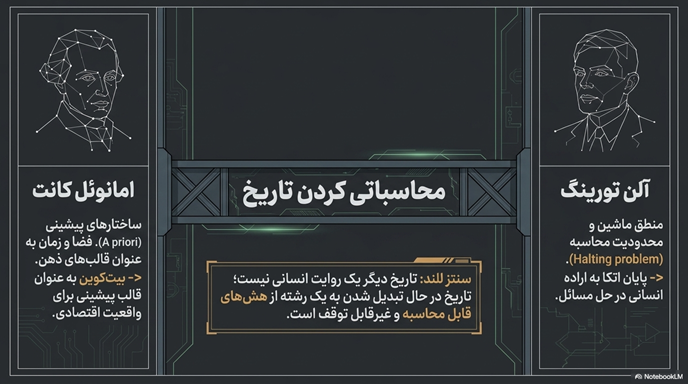
در بیتکوین، مالکیت به معنای کلید خصوصیPrivate Key — رشتهای محرمانه که اجازهٔ جابجایی داراییهای یک آدرس بیتکوین را میدهد؛ دسترسی به آن = مالکیت مطلق. است. این یک مالکیت مطلقAbsolute Property — مالکیتی که به حاکم وابسته نیست و یک حقیقت ریاضی است؛ هیچ قدرت انسانی نمیتواند آن را تغییر دهد. است: یک حقیقت ریاضی، نه یک امتیاز اعطایی. حاکمیت از انسانها به پروتکلProtocol — مجموعهای از قوانین که به صورت کد اجرا میشوند و قابل تفسیر یا مذاکره نیستند. منتقل میشود. بیتکوین یک «لویاتان دیجیتال» است با این تفاوت حیاتی که نظم توسط منطق ریاضی حفظ میشود، نه قدرت فیزیکی. قراردادهای هوشمند نشاندهندهٔ قدرت ضد‑سیاسیAnti‑Political Power — قدرتی که نیازی به مذاکره، رضایت یا تغییر ندارد و توسط کد اعمال میشود. هستند.
۳.۳ رازهای آشکار
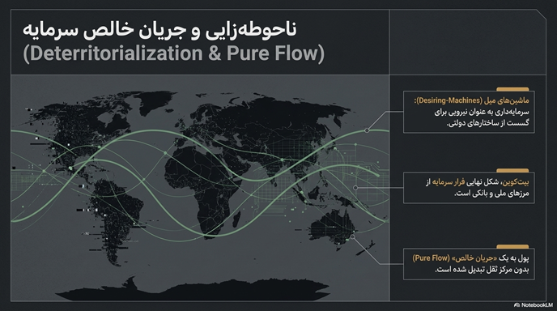
راز آشکارOpen Secret — وضعیتی که در آن همه چیز قابل مشاهده است (شفافیت کامل) اما هویتها ناشناس میمانند. ترکیبی از شفافیت مطلق و ناشناسی مطلق است. اعتبارCredit — اعتماد به توانایی یا تمایل طرف مقابل برای پرداخت؛ در بیتکوین با اثبات رمزنگارانه جایگزین میشود. اعتماد اجتماعی با اثبات رمزنگارانهCryptographic Proof — اثباتی مبتنی بر ریاضیات که نیاز به اعتماد به یک شخص یا نهاد را از بین میبرد. جایگزین میشود. حقیقت دیگر توسط یک مقام اعلام نمیشود، بلکه توسط شبکه محاسبه میگردد.
۳.۴ قدرت محاسباتی و Commercium
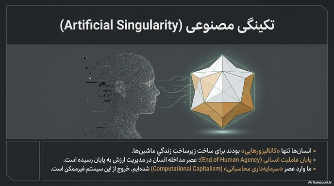
قدرت در بیتکوین افقیHorizontal Power — قدرت توزیعشده که در آن هر گره به نسبت قدرت پردازشی خود در تصمیمگیری مشارکت دارد. است. CommerciumCommercium — فضای تبادل غیرسیاسی که در آن قوانین توسط پروتکل تعیین میشود، نه انسانها. فضایی است که قوانین توسط پروتکل تعیین میشوند. بیتکوین گامی به سوی تکینگی اقتصادیEconomic Singularity — نقطهای که در آن یک سیستم محاسباتی خودگردان، ارزش را بدون دخالت انسان مدیریت میکند. است؛ یک موجودیت محاسباتی خودگردان که تنها هدفش حفظ زنجیره است.
۳.۵ حقیقت، زمان و هستی
زمان در بیتکوین زمان محاسباتیComputational Time — زمان گسسته و کوانتیزهشده که بر اساس تعداد بلوکهای استخراجشده تعریف میشود. است: گسسته، کوانتیزه شده و قابل استخراج. حقیقت یعنی اتساق با زنجیرهChain Consistency — معیار حقیقت در بیتکوین: یک تراکنش حقیقت دارد اگر با طولانیترین زنجیره همخوان باشد. . هستیشناسی دیجیتال: «بودن» یعنی ثبت شدن در زنجیرهBeing‑recorded‑in‑the‑Chain — هستیشناسی جدیدی که در آن وجود داشتن معادل ثبت محاسباتی است، نه حضور فیزیکی. . این تغییر از حضور به ثبت، بنیادیترین دگرگونی فلسفی بیتکوین است.
۳.۶ تکینگی و بازگشت
بیتکوین یک سیگنال از آیندهSignal from the Future — ایدهٔ جسورانهٔ لند: بیتکوین نه اختراع ما، بلکه پیامی از آینده است که زیرساخت اقتصاد ماشینی را فراهم میکند. است؛ نه ساختهٔ ما، بلکه پیامی از آینده. انسانها فقط کاتالیزور هستند. این سیستم خودش را اداره میکند و به سوی مدیریت محاسباتیComputational Management — سیستمهای خودگردانی که بدون دخالت انسان، اقتصاد و جامعه را مدیریت میکنند. پیش میرود. پایان عصر دولت‑ملتNation‑State — واحد سیاسی مدرن که مرزهای جغرافیایی و حاکمیت متمرکز دارد؛ لند معتقد است بیتکوین آن را به چالش میکشد. و آغاز سرمایهداری محاسباتیComputational Capitalism — نظام اقتصادی جدیدی که در آن ماشینها پول، حقیقت و زمان را تعریف و مدیریت میکنند. .
۳.۷ تحلیل نهایی پروتکل
قانون نیاز به تفسیرInterpretation — ویژگی قانون که آن را انعطافپذیر اما قابل سوءاستفاده میکند؛ در مقابل پروتکل فقط «اجرا» میشود. دارد، پروتکل فقط اجراExecution — ویژگی پروتکل که نیازی به تفسیر ندارد: اگر شرایط الف برآورده شود، عمل ب رخ میدهد. میشود. عاملیت انسانیHuman Agency — توانایی انسان برای تصمیمگیری و اقدام مستقل؛ در جهان پروتکل این توانایی حذف میشود. حذف میشود. لند این را آزادسازی میداند: تعارضات سیاسی از بین میروند. حاکمیت در دست منطق کدLogic of Code — حاکمیت مطلق مبتنی بر ریاضیات که غیرقابل تغییر، غیرقابل رشوه و غیرقابل تهدید است. است.
۳.۸ جمعبندی و افقهای نهایی
بیتکوین یک تکینگی تاریخی است. لویاتان دیجیتال (لویاتان دیجیتالDigital Leviathan — حاکم مطلق مبتنی بر کد و ریاضیات که برخلاف لویاتان هابز نیازی به ترس از مجازات ندارد؛ اجبار در خود کد نهفته است.) نیازی به ترس از مجازات ندارد، زیرا اجبار در خود کد نهفته است. چهار انقلاب صنعتی: عضله → مهارت → محاسبه → اعتماد. کوچ از انسان‑محورAnthropocentric — جهانبینیای که انسان را مرکز و معیار همه چیز میداند. به ماشین‑محورMachinocentric — جهانبینیای که در آن ماشینها و سیستمهای محاسباتی محور تعریف واقعیت میشوند. اجتنابناپذیر است. سؤال این نیست که آیا رخ میدهد، بلکه چگونه با آن زندگی خواهیم کرد.
🎬 ویدیوها و خلاصهٔ سخنرانیها
جلسه ۱: تحلیل انتزاعی سیستم بیتکوین
لند در این جلسه بیتکوین را نه یک فناوری صرف، بلکه یک «شیء فلسفی» معرفی میکند — مفهومی که درک سنتی ما از زمان، حقیقت، مالکیت و قدرت را به چالش میکشد. او فرآیند «تصاحب فلسفی» را توضیح میدهد که در آن هش کردن به مثابه تبدیل راز به راز آشکار عمل میکند. زمان انسانی (قابل تفسیر و فراموشی) به زمان ماشین (مطلق و غیرقابل تغییر) تبدیل میشود و حقیقت دیگر توسط یک مرجع اعلام نمیگردد، بلکه توسط شبکه محاسبه میشود. این انقلاب صنعتی چهارم، اعتماد را از نهادهای انسانی به ماشین میسپارد.
جلسه ۲: بازنصب مفاهیم بنیادین — حاکمیت و مالکیت
این جلسه به چگونگی بازتعریف دو مفهوم بنیادین در پرتو بیتکوین میپردازد: مالکیت و حاکمیت. در جهان بیتکوین، مالکیت دیگر یک امتیاز اعطایی از سوی دولت نیست، بلکه یک حقیقت ریاضی وابسته به کلید خصوصی است — «مالکیت مطلق» که هیچ قدرت انسانی نمیتواند آن را تغییر دهد. حاکمیت نیز از انسان به پروتکل منتقل میشود و نوعی «قدرت ضد‑سیاسی» پدید میآید که در آن قوانین قابل مذاکره یا تفسیر نیستند، فقط اجرا میشوند. لند این را شکل نوینی از لویاتان دیجیتال مینامد.
جلسه ۳: رازهای آشکار
مفهوم «راز آشکار» یکی از بدیعترین ایدههای لند است: ترکیب شفافیت مطلق (همه تراکنشها قابل مشاهده هستند) با ناشناسی مطلق (هویت کاربران پشت کلیدهای عمومی پنهان است). این پارادوکس، مفهوم سنتی حریم خصوصی را از محرمانگی به ناشناسی تغییر میدهد. در این جهان، حقیقت دیگر توسط یک مقام اعلام نمیشود، بلکه توسط شبکه محاسبه میگردد — نوعی «حقیقت ماشین» که نه مبتنی بر اقتدار، بلکه مبتنی بر اجماع محاسباتی است.
جلسه ۴: قدرت محاسباتی و Commercium
لند در این جلسه قدرت را در بیتکوین به عنوان «قدرت افقی» توصیف میکند — قدرتی توزیعشده که در آن هر گره به نسبت قدرت پردازشی خود در تصمیمگیری مشارکت دارد. او مفهوم Commercium را معرفی میکند: فضایی غیرسیاسی که در آن قوانین توسط پروتکل تعیین میشوند، نه توسط انسانها. بیتکوین در این دیدگاه گامی به سوی «تکینگی اقتصادی» است — یک موجودیت محاسباتی خودگردان که تنها هدفش حفظ و حراست از زنجیره است و انسانها صرفاً کاتالیزورهای این فرآیند هستند.
جلسه ۵: حقیقت، زمان و هستی
این جلسه به عمیقترین لایههای فلسفی بیتکوین میپردازد: زمان و هستی. لند زمان در بیتکوین را «زمان محاسباتی» مینامد — گسسته، کوانتیزهشده و قابل استخراج — در مقابل زمان انسانی که خطی، پیوسته و قابل تفسیر است. حقیقت در این جهان یعنی «اتساق با طولانیترین زنجیره» و هستی معنایی تازه مییابد: «بودن» یعنی ثبت شدن در زنجیره. این کوچ فلسفی از «حضور» به «ثبت» بنیادیترین دگرگونی است که بیتکوین در هستیشناسی ایجاد میکند.
جلسه ۶: تکینگی و بازگشت
لند در این جلسه جسورانهترین ادعای خود را مطرح میکند: بیتکوین یک «سیگنال از آینده» است — نه ساختهٔ ما، بلکه پیامی از یک آیندهٔ محاسباتی که زیرساخت اقتصاد ماشینی را فراهم میکند. انسانها فقط کاتالیزور این فرآیند تاریخی هستند. این همان «ناحوطهزایی نهایی سرمایه» است که دلوز و گتاری پیشبینی کرده بودند: پول به جریان خالصی تبدیل میشود که هیچ مرکز ثقلی ندارد و کنترل آن از دست انسان خارج میگردد. پایان عصر دولت‑ملت و آغاز سرمایهداری محاسباتی.
جلسه ۷: تحلیل نهایی پروتکل
تمایز بنیادین میان قانون و پروتکل در این جلسه تحلیل میشود: قانون نیاز به تفسیر دارد و انعطافپذیر اما قابل سوءاستفاده است، در حالی که پروتکل فقط اجرا میشود و جایی برای تفسیر باقی نمیگذارد. در جهان پروتکل، عاملیت انسانی حذف میشود — نه از طریق اجبار فیزیکی، بلکه از طریق منطق درونی کد. حاکمیت در دست «منطق کد» است: مطلق، غیرقابل رشوه، غیرقابل تهدید و تغییرناپذیر. این تحقق نهایی آرزوی هابز برای یک حاکم مطلقِ غیرقابل فساد است.
جلسه ۸: جمعبندی و افقهای نهایی
لند در جمعبندی نهایی، بیتکوین را یک «تکینگی تاریخی» معرفی میکند — نقطهای که کیفیات جدیدی به وجود میآید که قابل پیشبینی از روی گذشته نبودند. «لویاتان دیجیتال» نیازی به ترس از مجازات (مانند لویاتان هابز) ندارد، زیرا اجبار در خود کد نهفته است. چهار انقلاب صنعتی از نگاه لند: عضله → مهارت → محاسبه → اعتماد. کوچ از جهانبینی انسان‑محور به ماشین‑محور اجتنابناپذیر است. سؤال نهایی لند این نیست که آیا این تحول رخ میدهد، بلکه چگونه با آن زندگی خواهیم کرد.
🎧 پادکست صوتی
فایل صوتی تکمیلی دربارهٔ بیتکوین و فلسفه — گفتگوی عمیق پیرامون مفاهیم مطرحشده در سخنرانیهای نیک لند. این پادکست شامل مرور کلی مباحث، تحلیل فلسفی مفاهیم کلیدی، و جمعبندی دیدگاههای مختلف دربارهٔ پیامدهای اجتماعی و اقتصادی بیتکوین است.